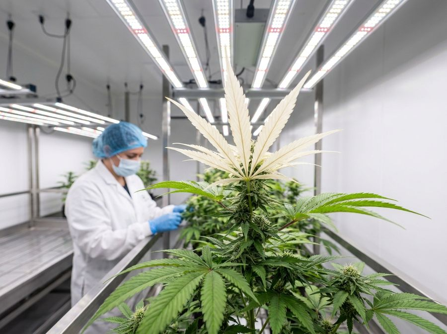

Increase the PPFD in steps to prevent bleaching
This paper shows how plants adapt when the light intensity increases. It shows how to make a list of PPFD values for each week and how the CO2 sets the safe PPFD limit. It also shows how to read the first signs of a problem. The paper includes new data (2024-2026) on the effect of high light on quality, and on far-red light and UV.
Purpose and scope
Two errors of new growers cause most of the light damage in a grow room. The first error is to apply full-power light to weak clones that have new roots. The second error is the opposite. The grower applies light that is too low to plants in the flowering stage, because the grower thinks that the light can burn the plants[1].
The two errors have the same correction. The plant adapts to the light intensity in a period of some weeks. When the plant has time at each value of the PPFD, it changes the structure of the parts of the leaf that absorb light. Thus its capacity agrees with the light.
If you increase the intensity too quickly, or to a value that is too high for the CO2, the plant has too much energy. This energy does not increase the growth. It causes damage: white tips with bleaching, and the growth stops.
The quantity of light that a plant can receive changes very much in one full cycle. A weak clone can receive approximately 80 µmol/m²/s. A canopy at peak flower with CO2 enrichment can receive a maximum of approximately 1500 µmol/m²/s[3]. This paper gives information on the acclimation of plants and on a list of PPFD values for each week. It also gives information on the highest PPFD that is safe and on how to read the signs of a problem.
This paper is for each person who caused heat damage to a clone. It is also for each person who does not increase the light because the light can cause damage. Read it with the papers crop steering and plant state dashboard.
Definitions
This paper uses five terms. If you know these terms, the paper is easy to read. Each term occurs again in the next sections.

Evidence and limitations
We want each paper to be correct. Thus we examine each paper for information that is not solid. This information comes from the view of one grower, from a small number of sources, or from grower methods that have no controlled test. We identify this information, and we do not show it as solid.
Frequently there is no paper for the decision that you must make. Then we use the reports of other growers and the methods that work in the rooms that we know. This information can help you, but it is not the result of a laboratory test. Use the methods that work for your plants, for your room and for your meters. If a table does not agree with your crop, use the data from your crop and record the difference.
- A large and sudden increase of PPFD causes photoinhibition and bleaching. A ramp of PPFD decreases this risk.
- At equal PPFD, a photoperiod of 12/12 gives a DLI that is one-third (approximately 33%) less than a photoperiod of 18/6.
- Ramps of more than one day, with a dimmer or with the height of the fixture, in commercial rooms.
- The maximum light intensities that growers can use in a room with no CO₂ enrichment. They give information about stress and ROI.
- One percentage of yield increase from far-red light for all cultivars.
- Schedules with the instruction that the PPFD must be X µmol on day Y, with no data on the leaf temperature and the VPD.
If you find an error, make a report. We will correct it. Make the report on GitHub, with the name of the paper and the information that is incorrect. If you have a source, include it: Make a report of an accuracy problem. The regulations, labels and licenses of your area always override each procedure in these papers. The label weak in a paper shows the points where the risk of an error is highest.
Acclimation of the plant to a higher PPFD
The plant makes new parts for the higher PPFD. In each week, the plant makes more chloroplasts (the small green parts of a cell that absorb light) and thicker protective surfaces on the leaf. It also makes a higher density of the enzymes that change the absorbed energy into sugar[8]. Thus each new step of light has parts that are prepared to use it.
A plant that has the parts for a moderate PPFD cannot use a sudden large quantity of photons. The parts that absorb light continue to absorb energy, but the leaf cannot use all of it. The energy that the leaf cannot use makes ROS faster than the protective enzymes of the leaf can remove them[5]. You see tips with bleaching, and the growth stops[6].
Thus a ramp in small steps is the correct method. When you add light in steps that are sufficiently small for the plant, the capacity increases with the intensity. As a result, each photon makes sugar and does not cause damage[7].
Decrease the PPFD, or give the plant more time for acclimation. Do not add more light, because more light increases the damage. White tips on the top leaves show that the leaf makes ROS faster than it can remove them. The ROS cause damage to the tissue of the leaf.
Light and CO2 together
In each green cell, the plant changes light energy and CO2 into sugar. Sugar is the material for all growth. The name for this change is photosynthesis, and it has two connected stages. The light reactions absorb energy from the photons. Then the Calvin cycle uses CO2 from the air to change this energy into sugar. The two stages must increase together[2].
If you increase the light but the CO2 stays low, the result is the same as when you increase the PPFD too quickly. The light reactions continue to absorb energy, but the Calvin cycle does not have sufficient CO2 to use this energy for sugar. The energy collects in the leaf and causes the same bleaching from oxidation. When you examine the leaf, you cannot find the difference between the two errors[6].
A system with high PPFD must have a CO2 concentration that agrees with the PPFD. With ambient air (approximately 400–600 ppm CO2), a PPFD of much more than approximately 850 µmol/m²/s uses electricity, but most of the light does not make sugar[2]. For 1200 µmol/m²/s, the CO2 must be approximately 1000–1200 ppm. For 1500, the CO2 must be approximately 1200–1500 ppm[1].
Light increases the growth only when the CO2 is sufficient. When the CO2 is not sufficient, more light does not increase the growth. The growth stops and the leaf becomes too hot.
PPFD values for acclimation in each growth stage
A cycle of approximately 14 weeks (approximately 98 days) in a grow room is an example. In this cycle, the light increases stage by stage[4]. The PPFD for clones is low. The PPFD in the vegetative stage increases in regular steps. After the change to the flowering photoperiod, the PPFD increases again to its peak, and then it decreases by a small quantity at the end.
The change to 12/12 decreases the daily light integral (DLI) by approximately one third (approximately 33%) at the same PPFD. The cause is that the lights are on for a smaller number of hours[1]. This effect is usual and correct. Do not increase the dimmer to a value that is too high because of it.
| Stage | Photoperiod | PPFD range (µmol/m²/s) | Information |
|---|---|---|---|
| Clone | 18/6 | 80 → 300 | Use a low PPFD while the clone makes roots and the parts that use light. |
| Vegetative bulking | 18/6 | 300 → 650 | Increase the PPFD by approximately 100 each week. |
| Flower acclimation | 12/12 | 600 → 950 | The plant adapts again after the DLI decreases at the change of the photoperiod. |
| Peak flower | 12/12 | 950, 1200 or 1500 | Keep the PPFD at the limit of your tier. |
| Maturation | 12/12 | 950 → 850 | Decrease the PPFD by a small quantity during ripening. |
The DLI decreases at 12/12. This effect is usual and correct. At the start of flowering, let the plant adapt again from approximately 600 to 950. Do not increase the lights to the peak PPFD on the day of the change.
Set the PPFD limit
The environment of your room sets the safe peak PPFD, and the PPFD that you want does not set it. The PPFD that you can keep is the PPFD that your CO2, your climate and your cooling can supply at this time. To increase the limit, you must increase the capacity of the full system, and not only the dimmer.
With ambient air, the correct PPFD limit is approximately 950 µmol/m²/s. When the PPFD is more than approximately 850, each added µmol gives less yield, because the CO2 is not sufficient to use the added light[2]. A middle system with CO2 that agrees with the PPFD gives a limit of 1200. The 1500 tier is only for advanced growers. The full system for the environment is necessary for this tier[3].
| Tier 1, Basic | Tier 2, Middle | Tier 3, Advanced | |
|---|---|---|---|
| Peak PPFD | approximately 950 | 1200 | 1500 |
| Necessary CO2 | 400–600 ppm (ambient air) | 1000–1200 ppm | 1200–1500 ppm |
| Necessary conditions | None. A PPFD of more than approximately 850 does not help the yield. | Good control of the VPD, and CO2 enrichment | Control of the leaf temperature, a method for the substrate, and a cultivar that can use the high light |
Do not operate Tier 3 light with Tier 1 air. This has the highest cost and causes bleaching of the plants. First, use the full PPFD limit that you can supply with CO2. Then try a higher limit.
Fixture height and dimmer
Two levers set the PPFD at the canopy: the dimmer of the fixture and its hanging height above the plants. The two levers change the quantity of light on the leaves, but the effect of each lever is different.
The dimmer is the lever with the best precision for small steps that are the same each time. It changes the intensity, but it does not change the distribution of the light or the radiant heat at the canopy. When you change the height of the fixture, the distribution and the heat also change. Thus a change of the height is a larger adjustment.
When you use one of the levers, make sure that the PPFD value is correct. Measure the PPFD at the canopy with a meter, or read it from the distance chart of the fixture. Do not use the watts of the fixture or the position of the dimmer as the PPFD. The same fixture gives very different values at different heights. Also measure the PPFD again when the distance between the canopy and the light becomes shorter. As a result of the stretch of the plants, the PPFD increases also if you make no change.
A plant can have a stretch of 15 cm (6 in) in the direction of the light in one week. The distance between the plant and the light then becomes shorter. As a result, the PPFD on the plant increases by a large quantity, also if you do not touch the lights. Measure the PPFD again after each period of fast growth.
Troubleshooting
Too much light causes white tips with bleaching at the top of the canopy, on the leaves near the source. The growth also stops[6]. But two different errors cause the same symptom, and you cannot find which error caused it from the leaf only.
The first error is to increase the intensity too quickly. The second error is high light with low CO2. The two errors cause too much energy in the leaf and the same damage from oxidation. Thus the symptoms are the same[5]. Do not try to find the error from the leaf only. Prevent the two errors: increase the intensity in small steps and keep the CO2 correct for your intensity.
| Symptom | Possible cause | Correction |
|---|---|---|
| White tips with bleaching at the top of the canopy | The PPFD increases too quickly, or the light is high and the CO2 is low | Decrease the PPFD by one step. Make sure that the CO2 agrees with your intensity. |
| Bleaching at a PPFD that you think is safe | The leaf temperature or the VPD is not in the correct range | First correct the climate. Heat and dry air cause bleaching also at a safe PPFD. |
| The growth stops at high light | The capacity of the plant is not sufficient, or the CO2 is the limiting factor | Keep the intensity the same. Give the plant time to adapt. Do a check of the CO2. |
| Light green leaves, much stretch and flowers with low density | The light is too low for a long time, because the grower thinks that more light causes damage | Increase the PPFD in steps. A light that is too low also decreases the yield. |
After bleaching, decrease the light by one step only. Then increase the light again in steps. After bleaching occurs one time, growers frequently decrease the light for flowering to a value that is much too low. As a result, the yield decreases. A light that is too low for a long time causes damage to a crop. The damage is as large as the damage that bleaching causes to plants[1].
New tests
Acclimation and the correct CO2 for the PPFD are the primary information in this paper. New tests (2024-2026) do not change this information. They give more information on three effects. The first effect is the effect of a high PPFD limit. The other two effects are from the spectrum levers far-red and UV. The data show that the effects of these two levers are smaller than many persons think.
A high PPFD limit with sufficient CO2 increases the quality, and not only the weight. In a test in 2024, the PPFD increased from 600 to 1200 µmol/m²/s. The cannabinoid content increased by approximately 60%, and the terpenoid content increased by approximately 40%. These two increases came from two causes: a heavier inflorescence and higher concentrations. The light-use efficiency was almost constant[9].
A previous test shows that the yield of dry flower has an almost linear relation with the PPFD, to approximately 1800 µmol[1]. Thus the data agree: a correct ramp to a high PPFD limit gives a better grade and more mass. This result is correct if the CO2 and the climate agree with the PPFD. Without sufficient CO2, the added light causes only bleaching (see the section above).
Far-red light can increase the cannabinoid yield in some cultivars, but it can decrease the potency in other cultivars. Far-red light at the end of the day lets you decrease the photoperiod from 12 to 10 hours, with approximately 5.5% less energy. In some cultivars, far-red light at the end of the day increases the cannabinoid yield. One cultivar showed a total cannabinoid yield that was approximately 70% higher[10].
But when you add far-red light to all the spectrum (a lower ratio of red to far-red), the inflorescence mass can increase, and the concentration of cannabinoids and terpenes can decrease[11]. The buds are higher and larger, have a lower density, and are weaker. Far-red light also causes stretch. Use far-red light as a tool for one cultivar at a time. Do not use it as a standard part of the spectrum because you think that more is better.
UV light does not usually increase the potency in new cultivars. A previous test found that added UV-B light did not increase the yield or the cannabinoid content[3]. A test of UV spectra in 2024 also showed that the cannabinoids did not increase. High UV-B light decreased the THC and burned the leaves. Only the lowest dose of UV-A light changed the terpene profile by a small quantity (linalool +29%, limonene +25%, myrcene +22%), and the yield stayed the same[12].
Cultivars with high THC are near their maximum potency. Thus do not think that UV light increases the potency. A careful low dose of UV-A light can change the aroma by a small quantity. This effect is the maximum. Added UV light usually decreases the efficiency.
First make the ramp and the CO2 correct. Then change the spectrum. Far-red light and UV light give small effects, and each has an unwanted effect. You use them with an intensity that is correct. They are not an alternative to it.
If a plant does not have full acclimation and the CO2 is too low, a change of the spectrum does not help. A correct ramp to your PPFD limit, with sufficient CO2, gives a better result.
Expected results and limitations
The light intensity is only one input. Each PPFD target in this paper is for an environment in which all the other values are in range. The leaf temperature is approximately 26–28°C (79–82°F). The VPD is 1.2–1.5 kPa. The root zone has sufficient capacity. The cultivar has a tolerance for the light load[2].
If you increase the light and the CO2 without these conditions, the plants become hot and have stress. The yield does not increase.
| Necessary for all tiers | Target |
|---|---|
| Leaf temperature | approximately 26–28°C (79–82°F) |
| VPD (drying power of the air) | 1.2–1.5 kPa |
| Root-zone capacity | Sufficient water and oxygen for the quantity that the plant uses |
| Cultivar | A cultivar with a tolerance for the light that you use |
A cycle without errors at the correct PPFD limit gives a better result than a cycle with errors at a higher limit. For most new growers, the best procedure is to use the ambient air limit of approximately 950 without errors. First make the acclimation and the CO2 correct. After that, you can try 1200 or 1500.
The light is only one input. It gives a good result only when all the other values of the environment are correct. The paper plant state dashboard shows how to read all the data of the plant. The paper signal and noise shows how to use correct signals and not noise.
References
- Rodriguez-Morrison, V., Llewellyn, D., & Zheng, Y. (2021). Cannabis Yield, Potency, and Leaf Photosynthesis Respond Differently to Increasing Light Levels in an Indoor Environment. Frontiers in Plant Science, 12, 646020. https://doi.org/10.3389/fpls.2021.646020 https://www.frontiersin.org/journals/plant-science/articles/10.3389/fpls.2021.646020/full
- Chandra, S., Lata, H., Khan, I. A., & ElSohly, M. A. (2008). Photosynthetic response of Cannabis sativa L. to variations in photosynthetic photon flux densities, temperature and CO2 conditions. Physiology and Molecular Biology of Plants, 14(4), 299-306. https://doi.org/10.1007/s12298-008-0027-x https://pubmed.ncbi.nlm.nih.gov/23572895/
- Llewellyn, D., Golem, S., Foley, E., Dinka, S., Jones, A. M. P., & Zheng, Y. (2022). Indoor grown cannabis yield increased proportionally with light intensity, but ultraviolet radiation did not affect yield or cannabinoid content. Frontiers in Plant Science, 13, 974018. https://doi.org/10.3389/fpls.2022.974018 https://www.frontiersin.org/journals/plant-science/articles/10.3389/fpls.2022.974018/full
- Moher, M., Llewellyn, D., Jones, M., & Zheng, Y. (2022). Light intensity can be used to modify the growth and morphological characteristics of cannabis during the vegetative stage of indoor production. Industrial Crops and Products, 183, 114909. https://doi.org/10.1016/j.indcrop.2022.114909 https://www.sciencedirect.com/science/article/abs/pii/S0926669022003922
- Takahashi, S., & Murata, N. (2008). How do environmental stresses accelerate photoinhibition? Trends in Plant Science, 13(4), 178-182. https://doi.org/10.1016/j.tplants.2008.01.005 https://pubmed.ncbi.nlm.nih.gov/18328775/
- Pospisil, P. (2016). Production of Reactive Oxygen Species by Photosystem II as a Response to Light and Temperature Stress. Frontiers in Plant Science, 7, 1950. https://doi.org/10.3389/fpls.2016.01950 https://pmc.ncbi.nlm.nih.gov/articles/PMC5183610/
- Gjindali, A., & Johnson, G. N. (2023). Photosynthetic acclimation to changing environments. Biochemical Society Transactions, 51(2), 473-486. https://doi.org/10.1042/BST20211245 https://pmc.ncbi.nlm.nih.gov/articles/PMC10212544/
- Schumann, T., Paul, S., Melzer, M., Doermann, P., & Jahns, P. (2017). Plant Growth under Natural Light Conditions Provides Highly Flexible Short-Term Acclimation Properties toward High Light Stress. Frontiers in Plant Science, 8, 681. https://doi.org/10.3389/fpls.2017.00681 https://pmc.ncbi.nlm.nih.gov/articles/PMC5413563/
- Sae-Tang W, Heuvelink E, Kohlen W, Argyri E, Nicole CCS, Kaiser E, et al. (2024). High light intensity improves yield of specialized metabolites in medicinal cannabis (Cannabis sativa L.), resulting from both higher inflorescence mass and concentrations of metabolites. J. Appl. Res. Med. Aromat. Plants 43:100583. https://doi.org/10.1016/j.jarmap.2024.100583
- (2025). The effects of far-red light on medicinal cannabis. Scientific Reports 15. https://doi.org/10.1038/s41598-025-99771-6
- (2024). Decreasing R:FR ratio in a grow light spectrum increases inflorescence yield but decreases plant specialized metabolite concentrations in Cannabis sativa. Environmental and Experimental Botany 228:106036. https://www.sciencedirect.com/science/article/pii/S0098847224004179
- Huebner DS, Batarshin M, Beck S, König L, Mewis I, Ulrichs C (2024). Influence of different UV spectra and intensities on yield and quality of cannabis inflorescences. Front. Plant Sci. 15:1480876. https://doi.org/10.3389/fpls.2024.1480876
Each citation in the paper, for example [1], refers to an item in this list. Each item is a primary source or an instruction from an authority, unless the item shows a different type. The results of cannabis tissue culture change much with the genotype. Before you use the dilutions, hormone doses and local regulations, make sure that they agree with the primary sources.